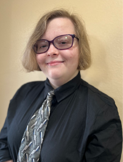

Author Information
This page was created by Savannah Stephenson and Sara Bowels. This topic is aimed at undergraduate students whose first language is C++. By introducing them to a professional integrated development environment that is used widely throughout the industry, these undergraduate students can continue to master the program. Visual Studio supports many of the most common programming languages, so it may be easier for students to learn one program that encompasses the languages they may use throughout their time as an undergraduate versus many programs.
Rather than having a static document SSB is hosting their technical tutorial on github pages, which will allow the tutorial to be dynamically updated if needed, and to reach a wider audience since the page can come up through google search results. A site will be easy for students to share amongst their peers and keep handy for routine use.
-
.jpg) Savannah Stephenson:
Savannah Stephenson is a senior Computer science student
pursuing her bachelors with a concentration in systems
programming and two minors in creative writing and mathematics.
She'll be graduating in Fall 2025 and hopes to work in software
development and eventually become a project manager.
Savannah Stephenson:
Savannah Stephenson is a senior Computer science student
pursuing her bachelors with a concentration in systems
programming and two minors in creative writing and mathematics.
She'll be graduating in Fall 2025 and hopes to work in software
development and eventually become a project manager.
-  Sara Bowels: Sara Bowles is a Junior Computer Science student that is pursuing their Bachelors degree in Computer Science with a concentration in Game Programming. They will graduate around Spring of 2026 and will pursue a career in game programming and digital design.